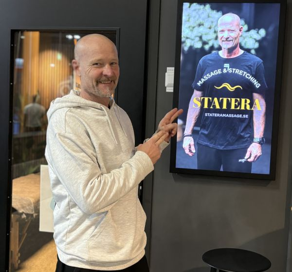

Statera - Vägen till balans
Namnet Statera kommer från latinet och betyder balans. Det är också själva grundtanken med min verksamhet. I en vardag som ofta innebär hög belastning, stress eller ensidiga rörelser är det lätt att kroppen hamnar i obalans, vilket ofta visar sig som värk, stelhet eller trötthet.
Behandling efter dina behov
Ingen kropp är den andra lik och därför tror jag inte på färdiga lösningar. För mig är det viktigt att alltid göra en behovsanpassad massage. Det innebär att jag lyssnar på vad din kropp behöver just idag – oavsett om det handlar om att lösa upp djupa muskelknutor, arbeta med fascian eller hjälpa dig med skadeförebyggande stretching.
Erfarenhet från elitidrott
Min bakgrund som elitidrottare har gett mig en djup förståelse för hur kroppen fungerar under press och vikten av återhämtning. Under 30 års tid har jag arbetat med massage, stretching och rehabilitering. Den erfarenheten använder jag för att hjälpa dig hitta tillbaka till din naturliga balans och öka ditt välbefinnande.
Målet är att du ska lämna min mottagning med en lättare känsla i kroppen och bättre fart på blodcirkulationen. Oavsett om du söker hjälp för ett specifikt besvär eller vill jobba förebyggande, anpassar vi behandlingen tillsammans.